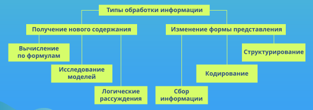

Урок 4. Информационные процессы
Перечень рассматриваемых вопросов:
- Понятие информационного процесса.
- Информационные процессы в окружающем мире.
- Сбор информации, её обработка, передача, хранение.
- Ориентированный и неориентированный графы.
- Основные понятия: дерево, корень, вершина (узел), лист.
Тезаурус:
Процессы, связанные с изменением информации или действиями с использованием информации, называют информационными процессами.
Деятельность человека, связанную с процессами сбора, представления, обработки, хранения и передачи информации, называют информационной деятельностью.
Решение практически любой задачи начинается со сбора информации.
Обработка информации – это целенаправленный процесс изменения содержания или формы представления информации.
Сохранить информацию – значит тем или иным способом зафиксировать её на некотором носителе.
Передача информации осуществляется по схеме: источник информации – кодирующее устройство – канал связи – декодирующее устройство – приёмник информации.
Теоретический материал для самостоятельного изучения
1. Понятие информационного процесса.
Последовательная смена состояний (изменение) в развитии чего-либо называется процессом.
Процессы, связанные с изменением информации или действиями с использованием информации, называют информационными процессами.
Можно выделить следующие основные информационные процессы: сбор информации, представление информации, обработка информации, хранение информации, передача информации.
Рассматривая карту местности, читая афишу, просматривая телепередачу, измеряя температуру воздуха, делая новые записи в календаре погоды или в телефонной книге, мы собираем и сохраняем информацию. Пытаясь решить возникшую проблему, выполнить домашнее задание, ответить на вопрос, мы всегда обрабатываем известную информацию. Отправляем ли мы письмо, SМS-сообщение или разговариваем по телефону – мы передаём и получаем информацию.
Деятельность человека, связанную с процессами сбора, представления, обработки, хранения и передачи информации, называют информационной деятельностью.
Рассмотрим информационные процессы более подробно.
2. Сбор информации.
Решение практически любой задачи начинается со сбора информации. Например, для того чтобы знать, какие телефильмы вы сможете посмотреть во время каникул, вам нужно собрать соответствующую информацию из программ телеканалов. Чтобы подготовить сообщение о достопримечательностях родного края, вам нужно расспросить взрослых, посетить краеведческий музей, изучить справочную литературу. Чтобы выбрать книгу в подарок другу, нужно знать, чем он интересуется, и какие книги у него уже есть.
Особая ценность собранной информации состоит в том, что она может служить источником новых знаний об окружающем нас мире.
Можно привести примеры сбора информации, предполагающие использование различных измерительных устройств. Так, задача составления прогноза погоды предполагает сбор на метеорологических станциях информации о температуре, осадках, атмосферном давлении, влажности воздуха, скорости и направлении ветра.
Многие, интересующие специалистов процессы, протекают очень быстро и могут быть сопряжены с опасностью для жизни. Например, такие ситуации могут возникнуть при сборе информации об аэродинамических характеристиках при разработке новой модели автомобиля, о его возможных повреждениях при столкновении с препятствием и т. д. В подобных случаях для сбора информации используются сложные автоматизированные измерительные комплексы.
3. Обработка информации.
Информацию об окружающем мире, собранную непосредственно через органы чувств или с помощью измерительных приборов, человек должен своевременно обрабатывать. Например, при переходе улицы, следует очень быстро обрабатывать информацию о сигналах светофора, о движении автомашин и др. Значительно большие информационные потоки должен обрабатывать специалист, обслуживающий пульт управления электростанции или другой сложной технической системы.
Когда пешеход переходит улицу, ученик отвечает на вопрос по истории, решает геометрическую задачу или переводит текст с русского языка наиностранный, а пилот принимает решение о наборе высоты или изменении скорости полёта, все они обрабатывают входную (поступившую) информацию. Из этой информации после её обработки получается выходная информация.
Обработка информации – это целенаправленный процесс изменения содержания или формы представления информации.
Можно выделить два типа обработки информации:
- обработка, связанная с получением нового содержания, новой информации;
- обработка, связанная с изменением формы представления информации, не изменяющая её содержания.
К первому типу обработки информации относятся: преобразование по правилам (в том числе вычисления по формулам), исследование объектов познания по их моделям, логические рассуждения, обобщение и др.
Задача. Пятеро одноклассников: Аня, Саша, Лена, Вася и Миша стали победителями олимпиад школьников по физике, математике, информатике, литературе и географии. Известно, что:
- победитель олимпиады по информатике учит Аню и Сашу работе на компьютере;
- Лена и Вася тоже заинтересовались информатикой;
- Саша всегда побаивался физики;
- Лена, Саша и победитель олимпиады по литературе занимаются плаванием;
- Саша и Лена поздравили победителя олимпиады по математике;
- Аня сожалеет о том, что у неё остаётся мало времени на литературу.
Победителем какой олимпиады стал каждый из этих ребят? Решение. Задачи такого типа решаются с помощью логических рассуждений, которые удобно фиксировать в таблице. Ниже представлена таблица, в которой отражена информация о победителях олимпиад, содержащаяся в условии задачи. Например, из п. 1 можно сделать вывод, что ни Аня, ни Саша не являются победителями олимпиады по информатике. Это отражено в таблице знаками «‑› в ячейках на пересечении строк и столбцов с соответствующими именами школьников и названиями олимпиад.
| Имя победителя | Олимпиада | ||||
|---|---|---|---|---|---|
| Физика | Математика | Информатика | Литература | География | |
| Аня | - | - | |||
| Саша | - | - | - | - | |
| Лена | - | - | - | ||
| Вася | - | ||||
| Миша | |||||
Имеющейся в таблице информации достаточно, чтобы сделать вывод о том, что победителем олимпиады по информатике стал Миша. Отметим это знаком «+» в соответствующей ячейке. Так как каждый из ребят стал победителем одной олимпиады, то Миша не может быть победителем олимпиад по физике, математике, литературе и географии. Отразим это знаками «‑» в соответствующих ячейках.
Продолжив рассуждения, получим:
| Имя победителя | Олимпиада | ||||
|---|---|---|---|---|---|
| Физика | Математика | Информатика | Литература | География | |
| Аня | - | + | - | - | - |
| Саша | - | - | - | - | + |
| Лена | + | - | - | - | - |
| Вася | - | - | - | + | - |
| Миша | - | - | + | - | - |
Ответ: Аня – победитель олимпиады по математике, Саша – по географии, Лена – по физике, Вася – по литературе, Миша – по информатике.
Ко второму типу обработки информации можно отнести:
структурирование – организацию информации по некоторому правилу, связывающему её в единое целое;
кодирование – переход от одной формы представления информации к другой, более удобной для восприятия, хранения, передачи или обработки информации;
отбор информации, требуемой для решения некоторой задачи, из информационного массива.
Большая часть информации в школьных учебниках представлена в форме текста на естественном языке. Представить изучаемый материал в общих, главных чертах, структурировать его, показав связи между отдельными частями, позволяют графические схемы. Одной из разновидностей таких графических схем является граф. Граф состоит из вершин, связанных линиями. Вершины графа могут изображаться кругами, овалами, точками, прямоугольниками и т. д. Линии, связывающие вершины, могут быть направленными (со стрелкой) или ненаправленными (без стрелки). В первом случае их называют дугами, во втором – рёбрами.
Например, типы обработки информации можно представить с помощью графа, изображённого на рис. 1.

Главным помощником человека в обработке больших информационных потоков является компьютер. Например, учёному трудно анализировать результаты измерений – десятки и сотни тысяч чисел, собранных с помощью некоторых автоматических устройств. Для получения информации о свойствах изучаемых объектов результаты измерений должны быть интерпретированы. Компьютеры позволяют, на основании результатов измерений, построить диаграммы и графики, дающие наглядное представление о соотношениях величин и зависимостях свойств в изучаемых предметах, процессах, явлениях.
На уроках информатики вы познакомитесь с возможностями компьютеров в обработке информации разных видов.
4. Хранение информации
Для того чтобы информация стала достоянием многих людей и могла передаваться последующим поколениям, она должна быть сохранена. История человечества знает разные способы хранения информации. Это и рисунки на стенах пещер, и глиняные таблички с клинописью, и рукописи на папирусе, и тексты на пергаменте, и берестяные грамоты, и всевозможные документы на бумаге. С помощью диктофона можно записать разговор людей или пение птиц, с помощью фотоаппарата или видеокамеры – сохранить изображение.
Хранение информации всегда связано с её носителем – материальным объектом, на котором можно тем или иным способом зафиксировать информацию.
Сохранить информацию – значит, тем или иным способом: зафиксировать её на некотором носителе.
Основным носителем информации на протяжении нескольких столетий остаётся бумага, что связано с такими её свойствами, как: относительная дешевизна изготовления; прочность и долговечность; удобство нанесения знаков и рисунков с помощью разноцветных красок.
В наши дни широкое распространение получили электронные носители информации – магнитные диски, оптические диски, флешкарты и другие. Информация, хранящаяся на электронных носителях, может быть воспроизведена и обработана с помощью компьютера.
Важным хранилищем информации для человека является его память. Действительно, каждый человек определённую информацию хранит «в уме». Мы помним свой домашний адрес, имена, адреса и телефоны близких родственников и друзей. В нашей памяти хранятся таблицы сложения и умножения, основные орфограммы и другие знания, полученные в школе. Но так уж устроен человек, что если не закреплять знания постоянными упражнениями, информация очень быстро забывается. Избежать потерь информации нам помогают записные книжки, справочники, энциклопедии и другие долговременные носители информации.
Хранилищами информации для человечества являются библиотеки, архивы, патентные бюро, картинные галереи и музеи, видеотеки и фонотеки. Гигантским хранилищем информации является компьютерная сеть Интернет.
5. Передача информации.
Мы постоянно участвуем в процессе передачи информации. Люди передают друг другу просьбы, приказы, отчёты о проделанной работе, публикуют рекламные объявления, отправляют письма, пишут SMS. Передача информации происходит при чтении книг, при просмотре телепередач, при разговоре по телефону и общении в компьютерной сети Интернет.
Рассмотрим процесс передачи информации более подробно (рис. 2):
- информация от источника поступает в кодирующее устройство;
- в кодирующем устройстве информация преобразуется в форму, удобную для передачи;
- закодированная информация поступает от источника к приёмнику (получателю) по соответствующему каналу передачи информации – каналу связи;
- приёмник содержит декодирующее устройство; в этом устройстве происходит преобразование закодированной информации, поступившей по каналу связи, к исходной форме.
Информацию можно передать от источника к приёмнику по каналу связи.
В процессе передачи информация может искажаться или теряться, если каналы связи имеют плохое качество или на линии связи действуют помехи.
Универсальным средством передачи информации являются компьютерные сети. С их помощью можно передавать любую информацию (текст, числа, звук, изображение).
6. Информационные процессы в живой природе и технике
Информационные процессы – необходимое условие жизнедеятельности любого организма. Приведём несколько примеров информационных процессов в живой природе:
цветки и соцветия некоторых растений в течение дня поворачиваются вслед за солнцем;
пчёлы танцем передают сородичам информацию об источниках корма;
многие дикие животные пахучими метками дают знать чужакам, что эта территория уже занята;
трели соловья служат для привлечения самки; домашние животные отличают знакомых людей от незнакомых; животные в цирке выполняют команды дрессировщиков.
Информационные процессы характерны и для технических устройств. Например, автоматическое устройство, называемое термостатом, воспринимает информацию о температуре помещения и в зависимости от заданного человеком температурного режима включает или отключает отопительные приборы. Программно управляемые станки работают, руководствуясь заложенной в них информацией – программой их работы; автопилот управляет самолётом в соответствии с заложенной в него программой ит. д.
Процессы, связанные с изменением информации или действиями с использованием информации, называют информационными процессами.
Деятельность человека, связанную с процессами сбора, представления, обработки, хранения и передачи информации, называют информационной деятельностью.
Решение практически любой задачи начинается со сбора информации.
Обработка информации – это целенаправленный процесс изменения содержания или формы представления информации.
Сохранить информацию – значит тем или иным способом зафиксировать её на некотором носителе.
Передача информации осуществляется по схеме: источник информации – кодирующее устройство – канал связи – декодирующее устройство – приёмник информации.